Reading Comprehension Worksheets
Informational text as a cloze passage with word bank, a QR-code listening task with free audio, and a word search – 5 pages with answer keys.
3,759 resources
Subject
Grade
Grado Celsius – Italian Reading: Cloze, Listening & Word Search
Governo – Italian Reading: Cloze Text, Listening Task & Word Search (Scheda)
Gotland – Italian Reading: Cloze Text, Listening Task & Word Search (Scheda)

Gotico – Italian Reading: Cloze Text, Listening Task & Word Search (Scheda)
Goti – Italian Reading: Cloze Text, Listening Task & Word Search (Scheda)
Fumo – Italian Reading: Cloze Text, Listening Task & Word Search (Scheda)
Damasco – Italian Reading: Cloze Text, Listening Task & Word Search (Scheda)

Corda – Italian Reading: Cloze Text, Listening Task & Word Search (Scheda)

Gossypium – Italian Reading: Cloze Text, Listening Task & Word Search (Scheda)

Gorilla – Italian Reading: Cloze Text, Listening Task & Word Search (Scheda)
Gonepteryx rhamni – Italian Reading: Cloze, Listening & Word Search

Gomphocerinae – Italian Reading: Cloze, Listening & Word Search
Gomma da masticare – Italian Reading: Cloze, Listening & Word Search
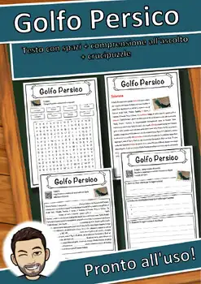
Golfo Persico – Italian Reading: Cloze, Listening & Word Search
Golf – Italian Reading: Cloze Text, Listening Task & Word Search (Scheda)
Golem – Italian Reading: Cloze Text, Listening Task & Word Search (Scheda)
Golden retriever – Italian Reading: Cloze, Listening & Word Search
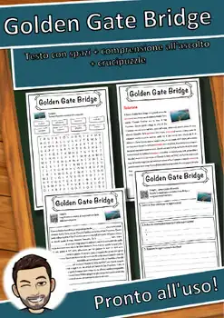
Golden Gate Bridge – Italian Reading: Cloze, Listening & Word Search
Glutine – Italian Reading: Cloze Text, Listening Task & Word Search (Scheda)
Glucidi – Italian Reading: Cloze Text, Listening Task & Word Search (Scheda)
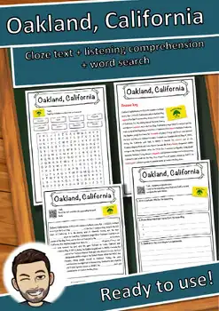
Oakland, California – Worksheet: cloze text, listening and word search
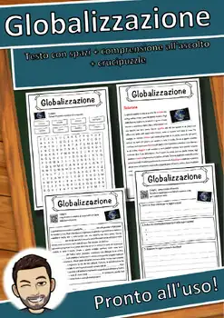
Globalizzazione – Italian Reading: Cloze, Listening & Word Search

Glis glis – Italian Reading: Cloze Text, Listening Task & Word Search (Scheda)
Glasgow – Italian Reading: Cloze Text, Listening Task & Word Search (Scheda)
Gladiatore – Italian Reading: Cloze Text, Listening Task & Word Search (Scheda)
Gallia – Italian Reading: Cloze Text, Listening Task & Word Search (Scheda)
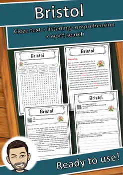
Bristol – Worksheet: cloze text, listening comprehension and word search
Galles – Italian Reading: Cloze Text, Listening Task & Word Search (Scheda)
Galileo Galilei – Italian Reading: Cloze, Listening & Word Search
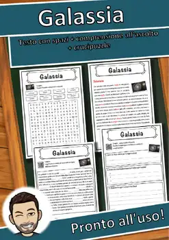
Galassia – Italian Reading: Cloze Text, Listening Task & Word Search (Scheda)

Galanthus – Italian Reading: Cloze Text, Listening Task & Word Search (Scheda)
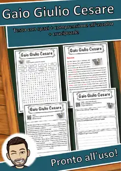
Gaio Giulio Cesare – Italian Reading: Cloze, Listening & Word Search
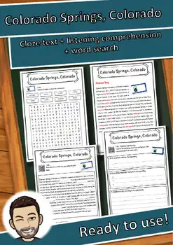
Colorado Springs, Colorado – Worksheet: cloze text, listening and word search

Gadolinio – Italian Reading: Cloze Text, Listening Task & Word Search (Scheda)
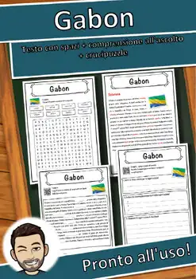
Gabon – Italian Reading: Cloze Text, Listening Task & Word Search (Scheda)
GPS – Italian Reading: Cloze Text, Listening Task & Word Search (Scheda)
Fær Øer – Italian Reading: Cloze Text, Listening Task & Word Search (Scheda)

Futbol Club Barcelona – Italian Reading: Cloze, Listening & Word Search
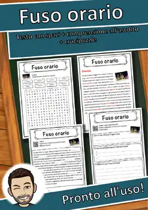
Fuso orario – Italian Reading: Cloze Text, Listening Task & Word Search (Scheda)
Furto – Italian Reading: Cloze Text, Listening Task & Word Search (Scheda)
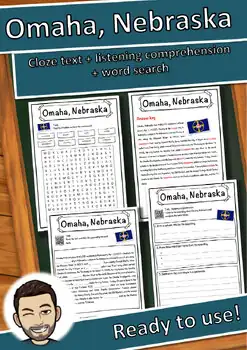
Omaha, Nebraska – Worksheet: cloze text, listening comprehension and word search
Franz Kafka – Italian Reading: Cloze Text, Listening Task & Word Search (Scheda)
Fuoco – Italian Reading: Cloze Text, Listening Task & Word Search (Scheda)

Fungi – Italian Reading: Cloze Text, Listening Task & Word Search (Scheda)
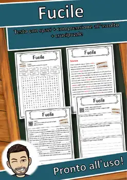
Fucile – Italian Reading: Cloze Text, Listening Task & Word Search (Scheda)

Fryderyk Chopin – Italian Reading: Cloze, Listening & Word Search

Frutto – Italian Reading: Cloze Text, Listening Task & Word Search (Scheda)
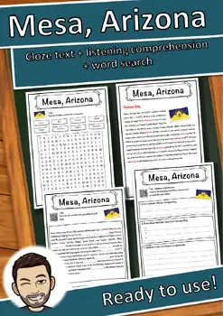
Mesa, Arizona – Worksheet: cloze text, listening comprehension and word search
No resources found – try a different search term or filter.